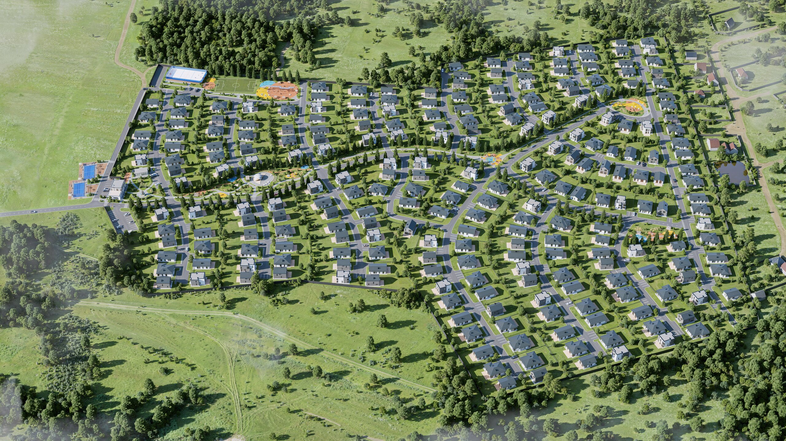
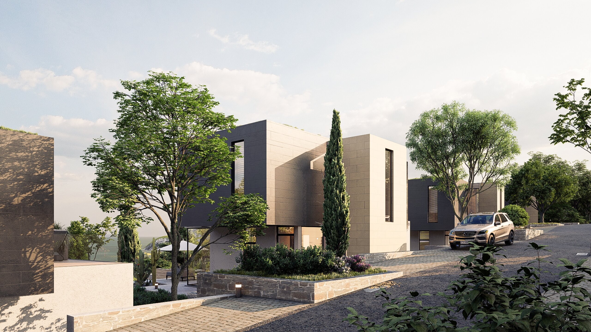
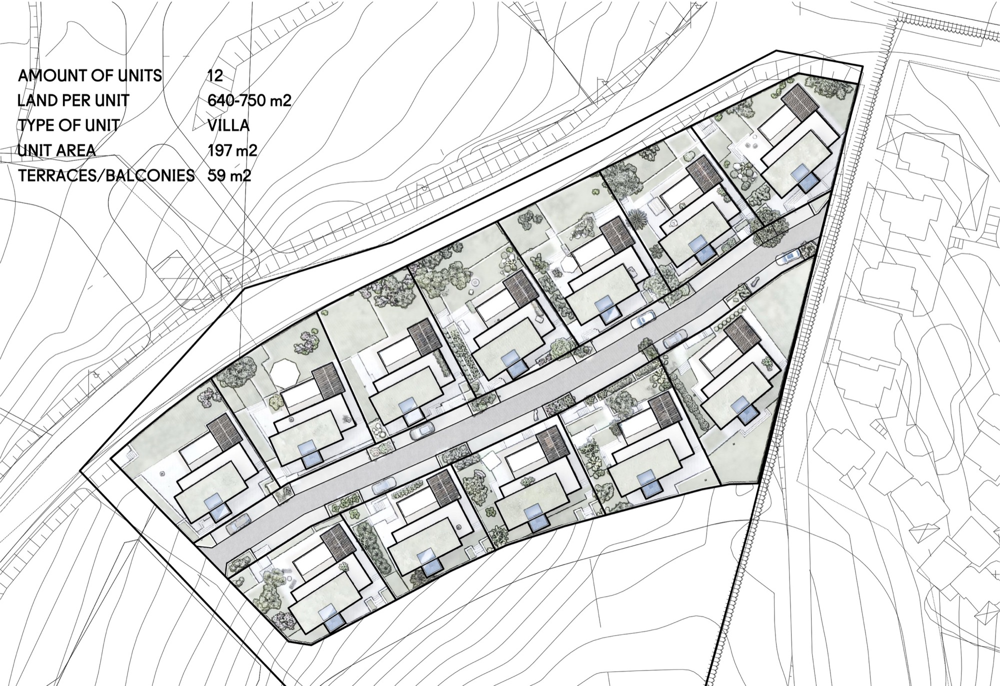
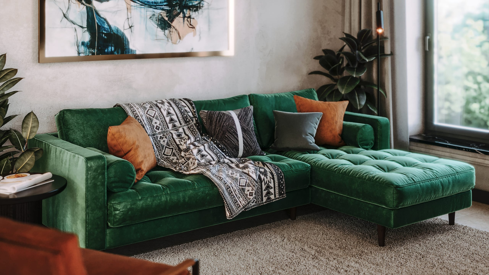

Riga Holiday ↗
Подмосковье · Мастер-план, 23 га. A510 дважды номинировалось на премию «Посёлок года». С проектом Riga Holiday бюро вместе с партнёрами вышло в финал.
Архитектурное бюро A510
Я Аркадий Каличкин. Живу в Бодруме, руковожу бюро A510 и представляю интересы инвестора на площадке.
Со мной можно обсудить проект по-русски, вместе выбрать участок и пройти весь путь до готового посёлка или частной виллы.
Обсудить участок ↗
Из практики бюро
В концепции Bitez Hills у каждой виллы свой сад и бассейн. На склоне важно решить, на какой отметке поставить дом, куда будет смотреть его терраса и как к нему подъехать. С этих вопросов я предлагаю начинать разговор о земле.
Посмотреть проект ↗
Моя роль в проекте
Посёлки и частные резиденции

Подмосковье · Мастер-план, 23 га. A510 дважды номинировалось на премию «Посёлок года». С проектом Riga Holiday бюро вместе с партнёрами вышло в финал.

Интерьер частной виллы. Работа бюро в масштабе одного дома — от планировки комнат до выбора материалов и света.
Аркадий Каличкин · Бодрум
Если уже есть варианты земли, пришлите точку на карте или кадастровый план. Предлагаю вместе выехать на место. Если поиск ещё идёт, начнём с того, какие дома вы хотите построить и какой участок для этого нужен.
Написать в WhatsApp ↗